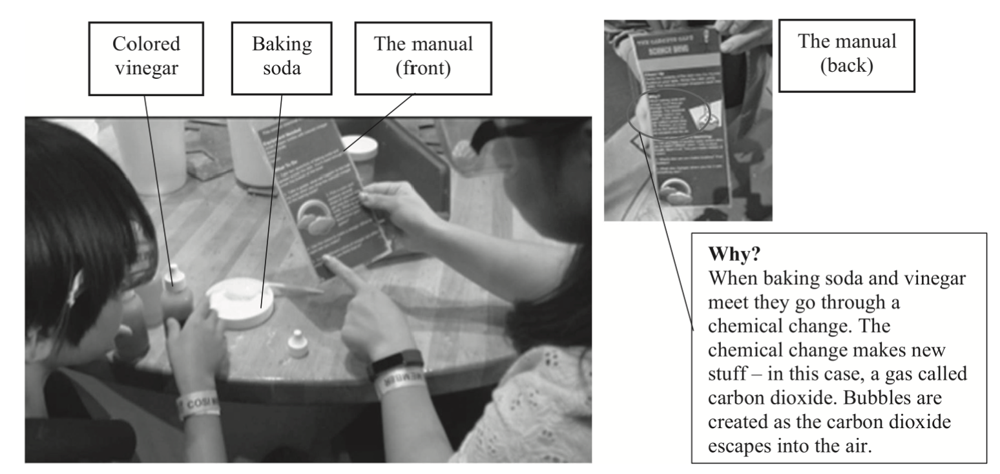
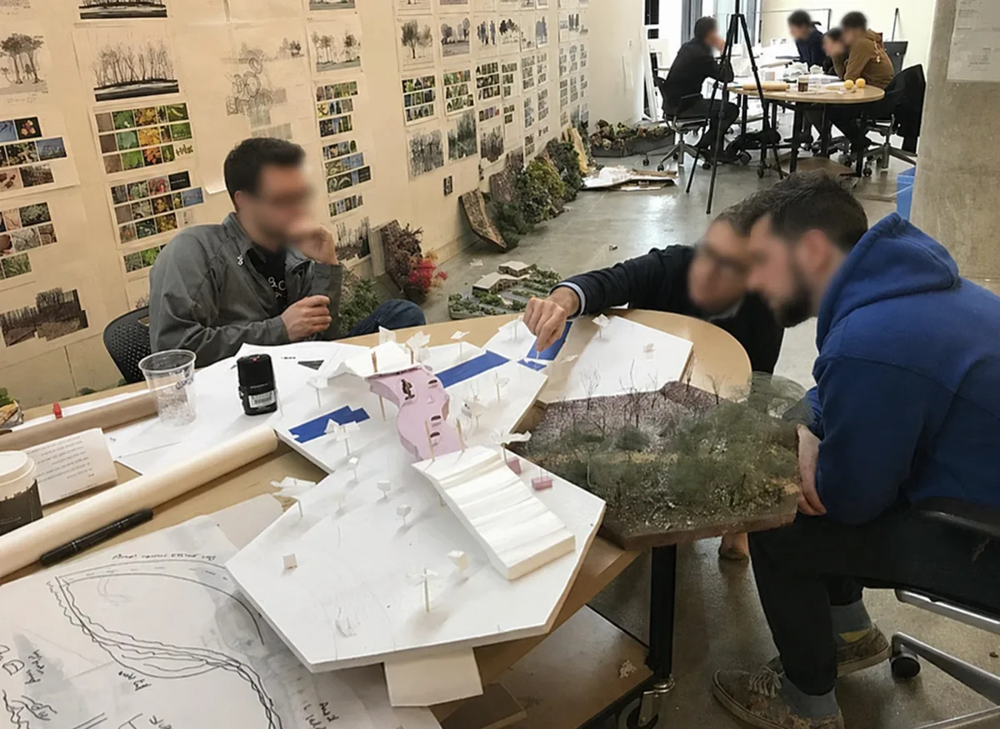
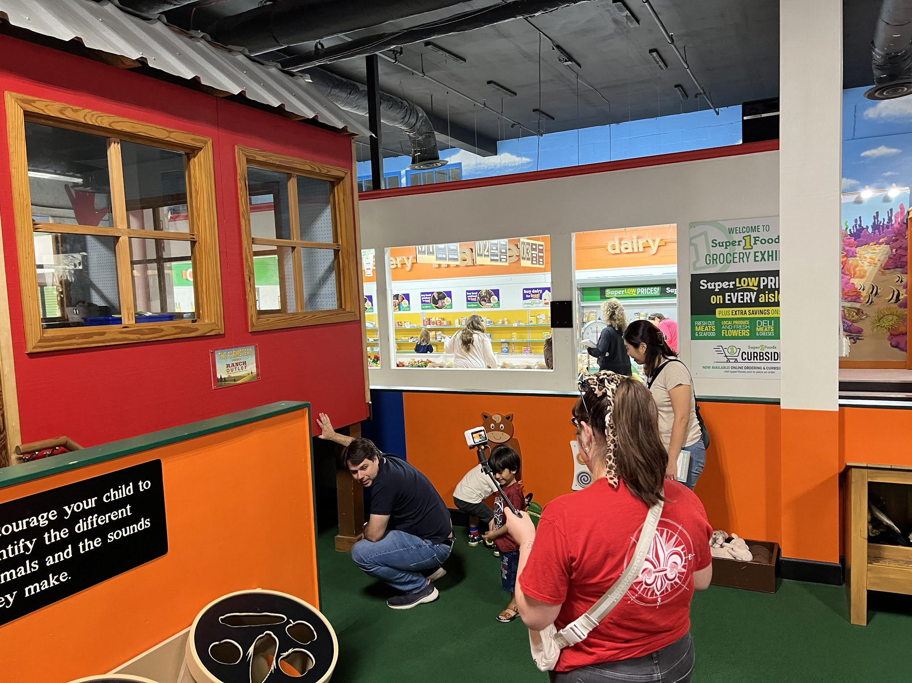

Min-Seok Choi
University of Illinois Urbana-Champaign
Early literacies · Multilingual family learning · Humanizing education · Social justice · Multimodal interaction analysis
Research Spotlight

How do multilingual families make meaning together? This interaction captures a moment of collaborative sense-making through talk, gesture, and shared attention in a science museum.
Research Trajectory
I study how multilingual children, families, and educators make meaning together through everyday interaction, and how institutions can learn to recognize and build on those strengths in more equitable ways.
My work began in science museums, tracing how sojourning families translanguage and make sense together. It grew into a question that runs through everything I do: what counts as literacy, who gets to be seen as literate, and how the professionals around them learn to notice differently.
That question of professional vision now carries across fields. In applied linguistics, I follow how students learn to see like designers in architecture studios. In teacher education, the Family Learning Observation and Analysis (FLOA) cycle helps preservice teachers notice family competence rather than deficit. At the iSchool, I extend this to libraries: training staff to see multilingual family competence and designing storytime and public programs as equitable participation.
Research Commitments
I am interested in how everyday interactions can reveal and expand possibilities for more equitable and humanizing forms of learning.
Across museums, libraries, homes, classrooms, and teacher education programs, I examine how learning emerges through interaction and how institutions can become more responsive to the strengths that multilingual children and families already bring.
Rather than asking what multilingual learners lack, I ask how educators, librarians, and researchers can learn to notice, value, and build upon the sophisticated meaning-making practices that often remain invisible in institutional settings.
Research Projects
Connected by one question: how people, and the institutions around them, learn to see competence. Select a project to read more.




Beyond Research
Six years teaching K–12 students in South Korea continue to shape how I understand learning, literacy, and educational equity.
Museums, libraries, classrooms, playgrounds, and community programs are where many of my research questions begin.
I care about how public institutions become places where multilingual children and families are recognized, heard, and able to participate.
Family Literacies at Home
At home, books help us move across languages, histories, and communities.
As a father of two Korean American children, I read with my sons across a shelf that includes Korean American stories, Black family and community life, Latinx migration and memory, and histories beyond our own. Reading often continues through conversation, drawing, and family journaling in Korean and English.
 Where’s Halmoni?
Korean American folklore
Where’s Halmoni?
Korean American folklore
 Where’s Joon?
Family, language, belonging
Where’s Joon?
Family, language, belonging
 Last Stop on Market Street
Black family and community
Last Stop on Market Street
Black family and community
 Hair Love
Black family and identity
Hair Love
Black family and identity
 Dreamers
Migration, language, libraries
Dreamers
Migration, language, libraries
 Islandborn
Latinx memory and belonging
Islandborn
Latinx memory and belonging
 한국사 만화A single volume represents the Korean history comics we read, including the Why? and Lee Hyun-se series.
한국사 만화A single volume represents the Korean history comics we read, including the Why? and Lee Hyun-se series.
 세계사 만화A single volume represents our world history comics and the conversations they open across places and periods.
세계사 만화A single volume represents our world history comics and the conversations they open across places and periods.
The books do not end when we close the covers. We return to them through questions, drawings, and journals that move between Korean and English.
Methodological Approach
My unit of analysis is moment-to-moment participation. Using multimodal interaction analysis and microethnographic discourse analysis of video, I trace how talk, gesture, gaze, objects, and institutional texts coordinate what participants can do next, and what becomes recordable as evidence of competence. Fine-grained video analysis of this kind remains uncommon in library and information science, where it offers a distinct way to make multilingual family learning legible to institutions.

News
August 2026
Beginning my appointment as Assistant Professor at the School of Information Sciences, University of Illinois Urbana-Champaign.
June 2026
"Constrained Multilingualism in a Korean Sojourner Family's Museum Learning" published in Language and Intercultural Communication.
Selected Work
Contact
School of Information Sciences
University of Illinois Urbana-Champaign
501 E. Daniel St., MC-493
Champaign, IL 61820 USA
minseokc@illinois.edu
ischool.illinois.edu